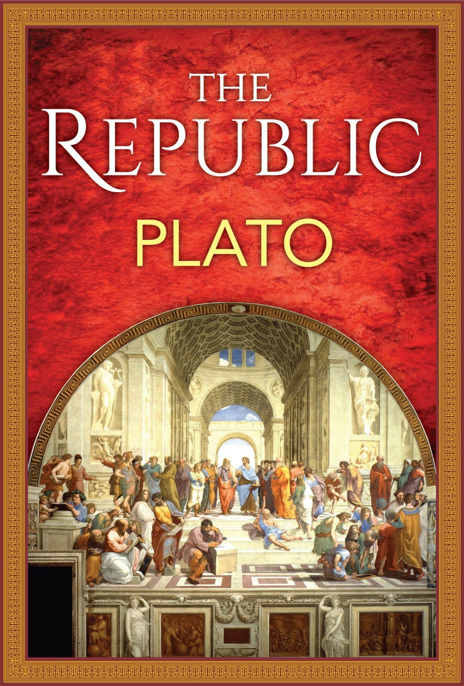

The Republic
More Information
See this linkPlot:
"The Republic" is a philosophical work written by Plato around 380 BCE. In this classic text, Socrates engages in conversations with various characters to explore the concept of justice and the ideal state. The book delves into the structure of the ideal society, the nature of justice, and the allegory of the cave, which represents the search for knowledge and the distinction between appearance and reality.